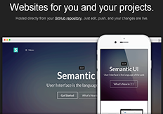
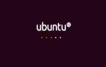

-
借助GitHub搭建静态个人网站并绑定域名
-

GitHub Pages提供搭建静态页面的功能，因此，我们不需要掏钱买虚拟主机了，可以借助于GitHub搭建属于自己的个人博客网站，并且GitHub pages支持域名绑定，因此，我们只需要再花一点钱买一个域名，就可以搭建一个有自己域名的个人静态网站了。
-
VMware安装Ubuntu及VMware Tools实用总结
-

由于Linux的开源性，目前大多数嵌入式设备大多选择Linux系统，而学习Linux就必须从某一个Linux系统开始了，目前Linux的桌面系统很多，大家不必纠结于选择什么系统，我这里选用Ubuntu16.04，如果直接安装双系统的话，Windows上的很多软件就无法使用了，不停的切换系统显然不是一个好的选择，因此在Windows上安装虚拟机来安装Ubuntu是一个很不错的选择。
-
Ubuntu上安装LAMP环境

Linux环境下没有很好的IDE，在做一些小项目时，我们借助于vim及其插件搭建开发IDE，但是使用上还是有些不仅人意，大项目的话我们都是在Windows上使用SI来编辑，然后仅仅在Linux上编译以及调试运行，那么中等项目呐，当我接触了Qt之后，发现Qt creator是一个不错的选择，可以自己选择编辑器、编译器以及调试器，编辑器有它自带的，也可以选择vim，编译器甚至可以选择系统上的交叉编译器，调试器甚至可以选择远程调试器，这样可以说，对于交叉编译及远程调试也有了很好的支持，但是它多cmake的支持目前做的不是很好，期待后续更新。
-
下载安装tortoiseGit

目前，分布式代码管理工具Git已然成为主流，学习并掌握它是必不可少的，但是习惯了SVN的我，在使用Git初期总是感觉不顺手，所幸tortoise依然给力，tortoiseGit的图形界面和tortoiseSVN基本相同，这样，从SVN到Git的过渡也就只差思想上的过渡了。